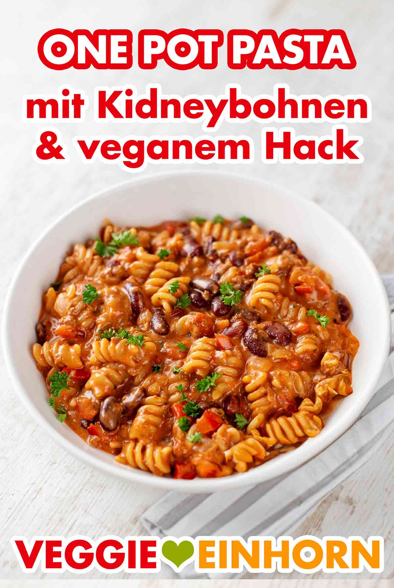

Odins One Pot Pasta

Dies ist ein einfaches veganes One Pot Gericht mit Nudeln, Kidneybohnen und (veganem) Hackfleisch.
Alternativ kann zu den unten genannten Zutaten noch etwas Mais zusammen mit den Kidneybohnen hinzugefügt werden.
Gerade für Kinder ein tolles Rezept :)
Zutaten / Ingredients
- Nudeln
- Zwiebeln
- Knoblauch
- Paprika
- gestückelte Tomaten
- Kidneybohnen
- (veganes) Hack
- Tomatenmark
- Kräuterfrischkäse
- Butter / Margarine / Öl
- diverse Gewürze
Zubereitung / Steps
- Zwiebeln schälen und schneiden
- rote Paprika entkernen und würfeln
- Konbizehen schälen und würfeln
- alles anbraten und Hackfleisch hinzufügen
- Tomatenmark rein
- Minute anbraten
- alles gut vermischen
- fertiiiiig
Das Original gibt es hier.